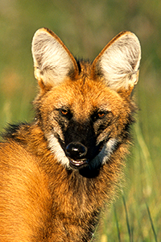
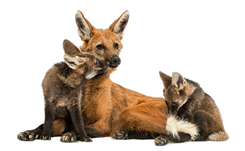
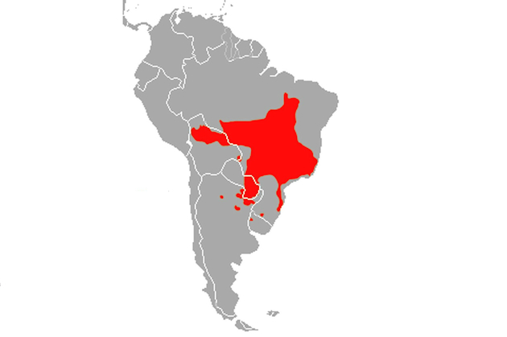

Um pouco sobre o Lobo-Guará
O lobo-guará (seu nome científico é Chrysocyon brachyurus) é o maior canídeo da América do Sul. Mede entre 95 e 115 cm de comprimento do corpo, mais de 38 a 50 cm de cauda. Tem em média 80 cm de altura. Um lobo adulto, pesa entre 20 e 33 kg.
A coloração do corpo, cauda, e membros, é um identificador individual. Lobos têm diferenças marcantes nestas marcas (negras e brancas). Esta composição de cores ajuda na comunicação entre indivíduos e na camuflagem, para se proteger contra predadores e se tornar invisível durante as caçadas.
Possui as patas longas para auxiliar nos grandes deslocamentos pelos ambientes abertos e capim alto das savanas. As patas auxiliam também no momento da caça (em saltos altos). As orelhas funcionam como amplificadores e movem-se constantemente para captar melhor os sons, por mínimos que sejam (de ratinhos, aves terrestres, sapos). Desta forma, para a busca de comida e presas, confia principalmente na audição e olfato excelentes.
Filhotes
O lobo-guará é monogâmico, ou seja, o par se encontra, de preferência, durante o período de reprodução, que ocorre entre abril e junho. Geralmente, divide uma parte do seu território com o parceiro e, no início do período de acasalamento, o casal começa a se comunicar por meio de vocalizações, odores corporais, fezes e urina.
A gestação dura em média 65 dias, nascendo de um a sete filhotes. Os filhotes nascem com a pelagem bem escura, quase preta, mas com a ponta da cauda branca, característica mantida durante toda a vida.
Gradualmente mudam de cor, à medida que crescem, perdendo a coloração escura com, mais ou menos, dez semanas de vida. Eles mamam por cerca de quatro semanas e depois passam a comer alimentos regurgitados pela mãe ou pelo pai. Acompanham a mãe e aprendem a caçar a partir dos 3 meses.
As tocas, em geral, são localizadas em arbustos densos ou campos limpos, com grama alta moldada. Estudos em cativeiro revelam que os machos ajudam a criar os filhotes, porém a fêmea consegue controlar o quanto ele participa desse processo. O cuidado parental em animais de vida livre ainda é pouco conhecido. A prole, normalmente, deixa o território dos pais ao completarem 1 ano de idade, quando atingem a maturidade sexual.
Onde eles se encontram
O lobo-guará é um canídeo endêmico da América do Sul, ou seja, ocorre só na porção sul do continente americano. Estima-se que a sua distribuição esteja localizada apenas no Paraguai, no Brasil, na Argentina e nas planícies bolivianas. No Uruguai, o último indivíduo visto foi registrado em 1990.
É comum encontrar esta espécie em ambientes naturalmente abertos, com maior densidade de gramíneas e arbustos, em geral com árvores esparsas, como nas regiões de Cerrado, Pampas e Chaco. É possível encontrá-los também em outras regiões, como o Pantanal e a Mata Atlântica, porém é muito raro. Existem alguns registros de lobo-guará em regiões de transição entre o Cerrado e a Amazônia e entre o Cerrado e a Caatinga.
Possui uma área de vida que varia de 40 a 123 km², dependendo de fatores como época do ano, disponibilidade de presas e características do bioma. Alguns estudos indicam que as áreas de vida de fêmeas são maiores que as de machos; as fêmeas também podem reduzir significativamente sua área de vida quando estão com filhotes pequenos.